Big Data Migration: Import/Export
In this chapter
This chapter explains how to transfer big data between QueryIO server and other data sources.
What is Big Data Migration
Data migration is the process of transferring big data between storage types, formats, or computer systems.
Data migration is usually performed programmatically to achieve an automated migration, freeing up human resources from tedious tasks.
To achieve an effective data migration procedure, data on the old system is mapped to the new system providing a design for data extraction and data loading.
QueryIO provides data migration services from and to different data stores. It provides two services:
- Data Import: Data from other servers or cloud stores or from local systems can be imported to QueryIO.
- Data Export: Data from QueryIO can be exported to other servers or cloud stores.
Currently QueryIO supports Amazon S3 cloud server and File Transfer Protocol(FTP), HDFS, POP/IMAP, HTTP/HTTPS, SSH, SFTP and also supports import from local system.
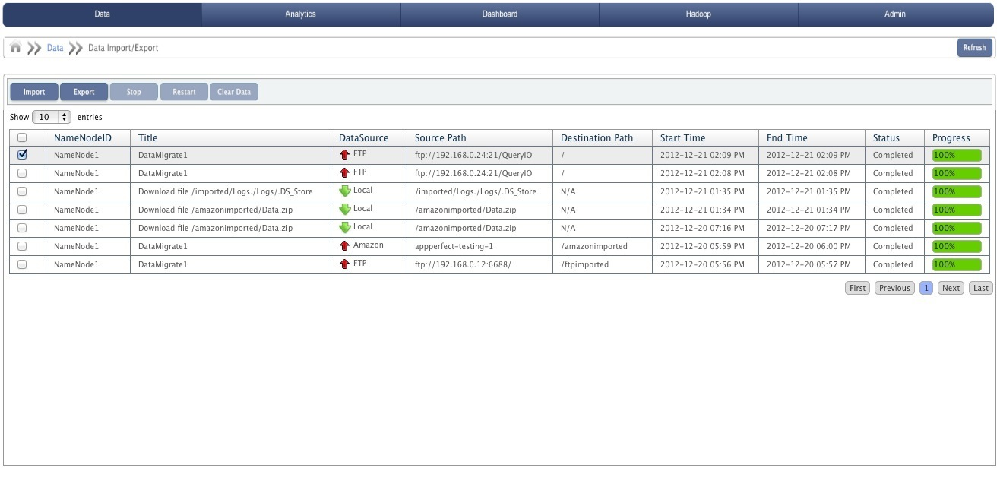
Data Migration Details
All import and export operations added are displayed in a tabular form. Various attributes of table are:
- Check Box to select the operation.
- NameNodeID: Unique identifier of the NameNode on which migration operation was performed.
- Title: Type of operation and name of the file.
- Data Store: Data Store type and an icon which indicates operation is import or export and red or green colored according to the status of migration process.
- Source Path: Path from where data is fetched.
- Destination Path:Path where data will be saved.
- Start Time: Time when the migration was started.
- End Time: Time when the migration operation was completed.
- Status: Current state of the import/export operation.
- Progress: A progress bar which shows the percentage of operation completed.
Data Import
To use data produced by system. The ability to import data is very important in software applications because it means that one application can complement another.
Currently QueryIO supports following data stores from which data can be imported:
To import a data from other source, click on Import button on Data Migration page.
- Title: Enter the title name for migration operation.
- Destination NameNode: Select the NameNode(from drop down list) on which import operation will be performed.
- HDFS Destination Path: Path where imported data should be saved. Default path is "/".
- Data Compression: Select compression algorithm to be applied on imported data.
- Data Encryption: Select the encryption algorithm to be used on imported data.
- Data Store: Select from various available data stores.
- Data Connection: Select a predefined data connection.
- Unzip file after upload: Select the check box to extract zip file contents during import.
Data Stores
- Local
- click Next to select and upload files.
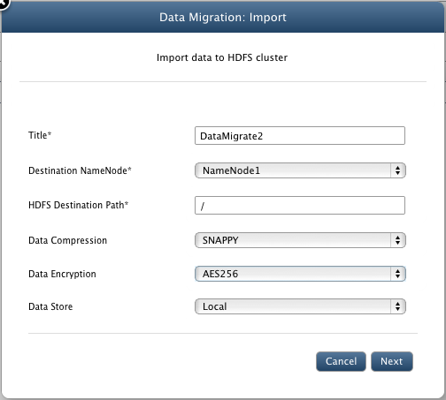
- In next window, click on Add files... to browse and select file to be uploaded. Users can add multiple files.
- Click on Cancel to remove the selected file dialog.
- Click on Upload to upload selected file to QueryIO.
- Click on Upload All to upload all selected files to QueryIO. Upload process will be asynchronous.
- Click on Cancel All to cancel all the uploads taking place.
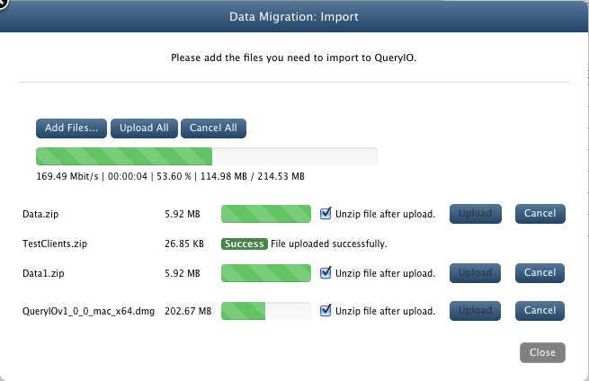
- Amazon
- Access Key: Provide access key to connect to amazon S3 cloud store.
- Secret Access Key: Enter secret access key.
- Bucket Name: Enter bucket name from which data will be imported.
- Inner Key: Enter inner key.
- Use SSL: Select check box if you require a secure connection. By default it is checked.
- Unzip file after upload: Select the check box to extract zip file contents during import.
- Click on Import to import data from data store.
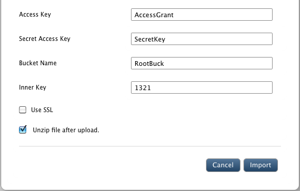
- FTP:
- FTP Host: Name or IP of host to connect through FTP.
- FTP Port: Port on which host's FTP service is running.
- Username: Username of the host machine to login.
- Password: Password for the account provided above.
- FTP Source Path: Path from where data will be imported.
- Unzip file after upload: Select the check box to extract zip file contents during import.
- Click on Import to import data from data store.
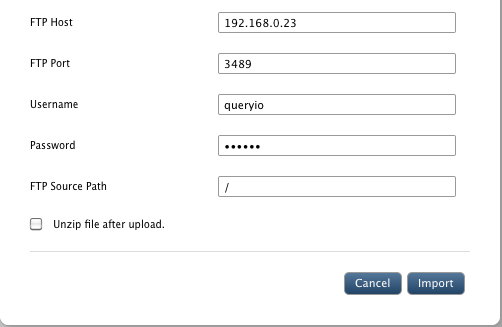
- HDFS:
- Host: HDFS host name.
- Port: Port on which HDFS host service is running.
- Root Path Prefix: Path to the data to be imported.
- Click on Import to import data from another HDFS.
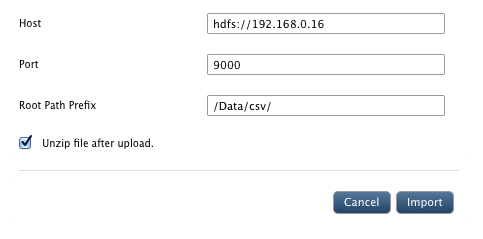
- POP/IMAP:
- Data Connection: Select predefined POP/IMAP settings or click on "ADD" to create new connection.
- Folder: Folder from which email will be fetched.(Example: Inbox, Sent, Draft etc)
- Prefix: Name to be altered before email file name.
- Suffix: Name to be appended at end of email file name.(Example: Prefix_1_Suffix.eml)
- Start Date: Date interval between which mails will be retrieved.
- Start Date: End Date interval between which mail wills be retrieved.
- Click on Import to import data using POP/IMAP.
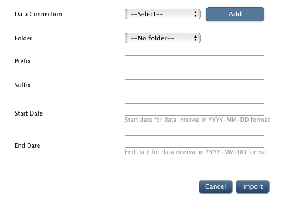
- Using HTTP/HTTPS:
- Base URL: URL from which data will be imported.
- User Name: User name if authentication is required to access files using HTTP/HTTPS.
- Password: Password of the user name provided.
- File: File to be imported.
- Character Encoding: Supported character encoding of the file.
- Click on Import to import data using HTTP/HTTPS.
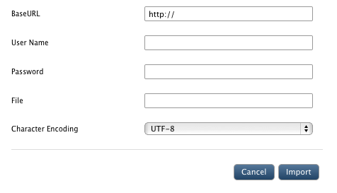
- Using SSH:
- Host: HostName / IP of the machine from which data will be imported.
- Port: Port on which SSH service is working on host machine.
- User Name: User name for authentication.
- Authentication Method: Select from "Password" or "SSH Key"
- Password / SSH Key: Password / SSH of the user name provided.
- SSH Source Path: Comma separated list of files will be imported.
- Unzip file after upload: Select the check box to extract zip file contents during import.
- Click on Import to import data using SSH.
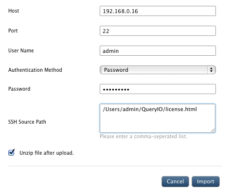
- Using SFTP:
- SFTP Host: Name or IP of host to connect through SFTP.
- SFTP Port: Port on which host's SFTP service is running.
- Username: Username of the host machine to login.
- Password: Password for the account provided above.
- SFTP Source Path: Path from where data will be imported.
- Unzip file after upload: Select the check box to extract zip file contents during import.
- Click on Import to import data using SFTP.
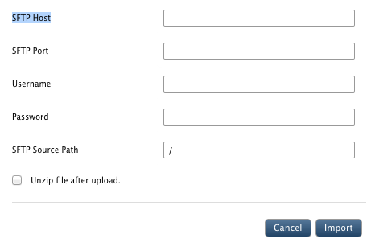
- Database:
- Data Connection: Select predefined database settings or click on "ADD" to create new connection.
- Database Driver Class: Driver class for the database.
- Database Connection URL: Connection URL required to connect to the database.
- Username: User name for authentication.
- Password: Password of the username provided.
- Import all tables from database: Checkbox to include all tables or only selected tables.
- Select Tables: Tables selected for Data Import.
- Click on Import to import data from database.
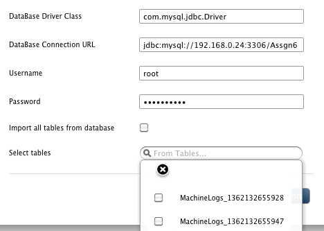
Data Export
To transfer data from our system to other data store and enabling the two stores to share the same data.
Currently QueryIO supports following data stores to which data can be exported:
- To Amazon S3 cloud store
- Using FTP
- HDFS
- HTTP / HTTPS
- SSH
- SFTP
- Database
To export a data to other source, click on Export button on Data Migration page.
- Title: Enter the title name for migration operation.
- Source NameNode: Select NameNode(from drop down list) from which data will be exported.
- HDFS Source Path: Path from where data will be exported. Default path is "/".
- Data Store: Select from various available data stores.
- If Amazon is selected:
- Access Key: Provide access key to connect to amazon S3 cloud store.
- Secret Access Key: Enter secret access.
- Bucket Name: Enter bucket name to which data will be exported.
- Inner Key: Enter inner key.
- Use SSL: Select check box if you require a secure connection.
- Click on Export to transfer data to data store.
- If FTP is selected:
- FTP Host: Name or IP of host to connect through FTP.
- FTP Port: Port on which host's FTP service is running.
- Username: Username of the host machine to login.
- Password: Password for the account provided above.
- FTP Destination Path: Path where data will be stored at host machine.
- Click on Export to transfer data to data store.
- If HDFS is selected:
- Host: HDFS host name.
- Port: Port on which HDFS host service is running.
- User Name: HDFS username.
- Group: HDFS group.
- Root Path Prefix: Path to the data to be exported.
- Click on Export to transfer data to data store.
- If HTTP / HTTPS is selected:
- Base URL: URL to which data will be exported.
- User Name: User name if authentication is required to access files using HTTP/HTTPS.
- Password: Password of the user name provided.
- File: File to be exported.
- Character Encoding: Supported character encoding of the file.
- If SSH is selected:
- Host: HostName / IP of the machine from which data will be imported.
- Port: Port on which SSH service is working on host machine.
- User Name: User name for authentication.
- Authentication Method: Select from "Password" or "SSH Key"
- Password / SSH Key: Password / SSH of the user name provided.
- SSH Destination Path: Location where data will be saved on host machine.
- Unzip file after upload: Select the check box to extract zip file contents during import.
- If SFTP is selected:
- SFTP Host: Name or IP of host to connect through SFTP.
- SFTP Port: Port on which host's SFTP service is running.
- Username: Username of the host machine to login.
- Password: Password for the account provided above.
- SFTP Destination Path: Path where data will be stored at host machine.
- Click on Export to transfer data to data store.
- If Database is selected:
It asks user to define Database schema for the database.
- Has Header Row: Whether file which is to be uploaded contains header row or not.
- Delimiter: Character on which file parsing takes place.
- Value Separator: Delimiter used in file to separate values.
- Sample File: Select a sample file to auto detect schema.
- Records to Analyze: Number of records which should be analyzed to detect Data types for each column.
- Click on Export to transfer data to data store.
Restart/Stop/Delete Operation
Select the check box against the import/export operation and click on Stop button to perform respective operations. You can stop an import/export operation any time.
You can also restart operation using Restart button.
If you want to clear an entry from the table, select the check box and click Clear Data button.
You can change the number of entries viewed at a time from 10 to 100.
You can navigate through migration operation details using page numbers at the bottom of the details table.
Copyright © 2017 QueryIO Corporation. All Rights Reserved.
QueryIO, "Big Data Intelligence" and the QueryIO Logo are trademarks
of QueryIO Corporation. Apache, Hadoop and HDFS are trademarks of The Apache Software Foundation.